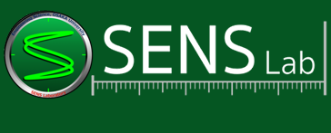

<header id="page-top" data-spy="scroll" data-target=".navbar-fixed-top">
<div class="page-navigation">
	<nav class="navbar navbar-default navbar-fixed-top" role="navigation">
	<!-- <nav class="navbar navbar-default navbar-fixed-top"> -->
		<div class="container">
		<!-- Brand and toggle get grouped for better mobile display -->
		<!-- <div class="navbar-header">-->
			<div class="navbar-header page-scroll">
				<button type="button" class="navbar-toggle" data-toggle="collapse" data-target=".navbar-ex1-collapse">
					<span class="sr-only">Toggle navigation</span>
					<span class="icon-bar"></span>
					<span class="icon-bar"></span>
					<span class="icon-bar"></span>
				</button>
				<a class="navbar-brand" href="http://www.sens.sys.es.osaka-u.ac.jp/">
				
				</a>
			</div>

			<!-- Collect the nav links, forms, and other content for toggling -->
			<div class="collapse navbar-collapse navbar-ex1-collapse">
				<ul class="nav navbar-nav navbar-right">
					<li class="hidden"><a class="page-scroll" href="#page-top"></a></li>
					<li>
						<a class="page-scroll" href="index.html">Home</a>
					</li>
					<li>
						<a class="page-scroll" href="research.html">Research</a>
					</li>
					<li>
						<a class="page-scroll" href="people.html">Members</a>
					</li>
					<li>
						<a class="page-scroll" href="contact.html">Contact Us</a>
					</li>		
				</ul>
			</div>
		</div>
	</nav>
</div>
</header>